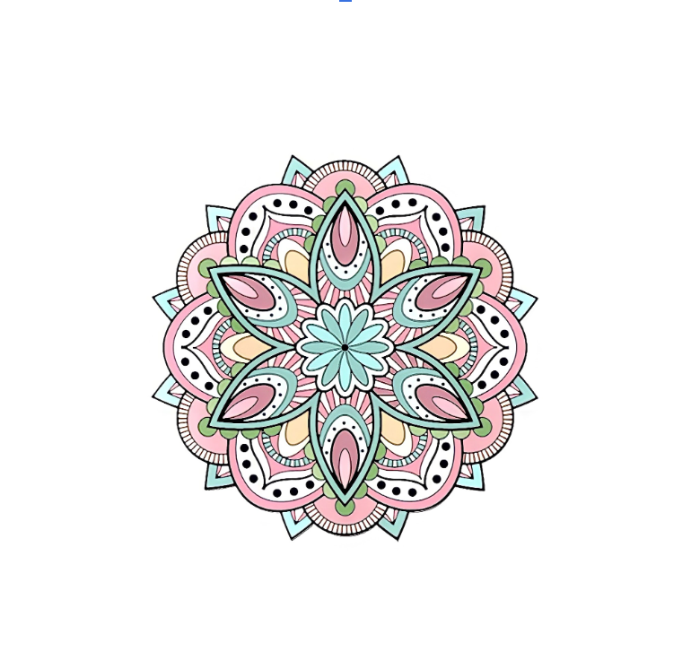
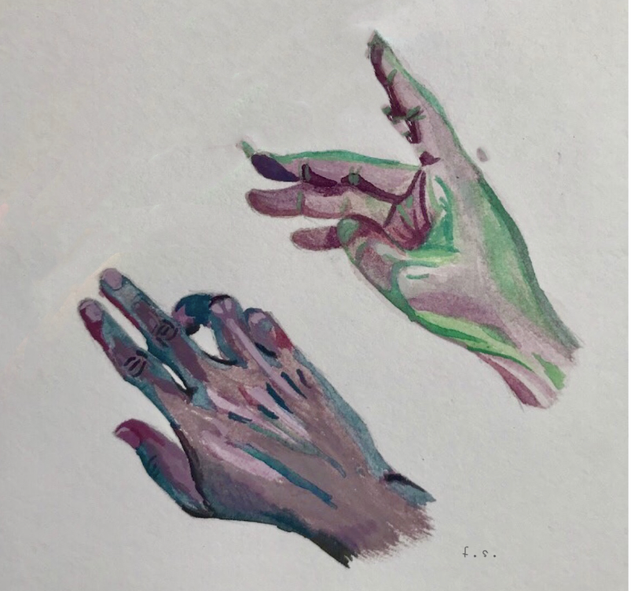

Visual Designs
Queer Eye
Illustrate a color-wheel

Colored Mandala
Illustrate a mandala through digital means

Redesign Album Cover
Choose an artist's album to redesign through existing images or your own

Out of Touch
Draw a body part using a medium of choice

Butterfly
Use everyday objects to set up dioramas or scenes to photograph

Ballet Burger
Doodle Art